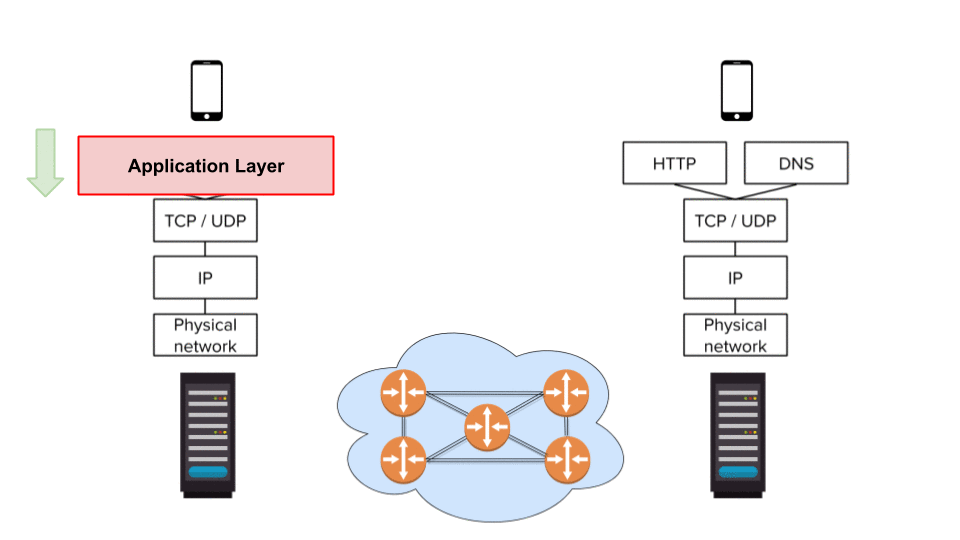

Lesson 5 - Protocols
At the end of this lesson, you will be able to:
- Explain why protocols are necessary for communication on the internet.
Protocol Suite
There are billions of devices connected to the Internet and hundreds of different kinds of devices: laptops, tablets, phones, smart refrigerators, handheld credit card readers, and so on. How do they all know how to find and talk to each other?
The answer is protocols (communication standards) - the shared rules that let this whole zoo of devices interact smoothly. Protocols are the rule book for communicating on the Internet.
Because everyone follows the same rule book, all data gets sent and received by the same rules, no matter whose device made it. Better still, these protocols are open (available for use by anyone), so anyone can build systems that connect to the Internet. Let's take a quick look at the different layers of protocols now, and then we'll dive deep in the next few lessons.
Take a look at figure 2.9. When the device on the left makes a request, that request is passed down through the layers, then across the network, then up the same layers to the destination device on the right. Each layer is an abstraction - it does its one job and then hands the request to the next layer, no questions asked.

Link layer protocols
Link Layer Protocols, like WiFi, manage the connection between an Internet device and its local network. These are the least abstract of the bunch - they deal directly with your physical hardware.
Internet layer protocols
Internet Layer Protocols (such as IP) manage the pathways that data packets travel across networks - this is the layer the routers speak, using IP to move information to its destination. These protocols let us treat the Internet as one big network, even though the physical reality underneath is a patchwork of many subnetworks.
Transport layer protocols
You couldn't move a large file - an image, a movie - in one packet. The information has to be broken up into smaller packets, which may each take different routes to the destination. Transport Layer Protocols (such as TCP or UDP) handle the chopping-up on one end - breaking a message into packets for the lower-level protocols to transmit - and the reassembly of the message from those packets when they arrive.
Application layer protocols
Application Layer Protocols (such as HTTP and DNS) sit at the highest level of abstraction: they manage how data is interpreted and displayed to actual humans. The lower layers just move bits around; this layer is where those bits get their meaning. Your computer and the server have to agree on what the bits mean, and application protocols are that agreement.
And every one of these is an open standard - anyone can look up a protocol and code with it to make new hardware or software, no permission required. The Internet is probably the largest and most complicated artifact in human history, and it runs on cooperation.
Now let's dive deeper into each of these protocols.